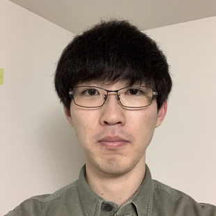

日本語/English
Masaya Yamada

Education
- PhD student, University of Tsukuba. (From April 2022)
- Supervisor: Prof. Hiroyuki Kitagawa
- Master of Engineering, University of Tsukuba, March 2022.
- Bachelor of Information Engineering, University of Tsukuba, March 2020.
Research topics
Traceability, Stream processing, Database systemsPublications
Journal
- Masaya Yamada, Hiroyuki Kitagawa, Toshiyuki Amagasa, Akiyoshi Matono, "Augmented Lineage: Traceability of Data Analysis Including Complex UDF Processing", The VLDB Journal, Springer. (Impact Factor 4.243 (2021)) [paper]
International Conference
- Masaya Yamada, Hiroyuki Kitagawa, Salman Ahmed Shaikh, Toshiyuki Amagasa, Akiyoshi Matono, "Streaming Augmented Lineage: Traceability of Complex Stream Data Analysis", Proc. 24th International Conference on Information Integration and Web Intelligence (iiWAS2022), Virtual Conference, November 28-30, 2022. (Full paper) (accepted) [paper]
- Masaya Yamada, Hiroyuki Kitagawa, Toshiyuki Amagasa, Akiyoshi Matono, "Augmented Lineage: Traceability of Data Analysis Including Complex UDFs", In Proceedings of the 32nd International Conference on Database and Expert Systems Applications (DEXA2021) , Vol. 1, pp. 65-77, Online, September 27-30, 2021. (Full paper) (Acceptance rate 27%) [paper]
Experience
Internship
- Rakuten Group, Inc., Engineer Internship, Sep. 2022.
Research Assistant
- AIRC, AIST, from Jan. 2021 to present.
Technical Assistant
- Center for Computational Sciences, University of Tsukuba, from Oct. 2020 to Dec. 2020.